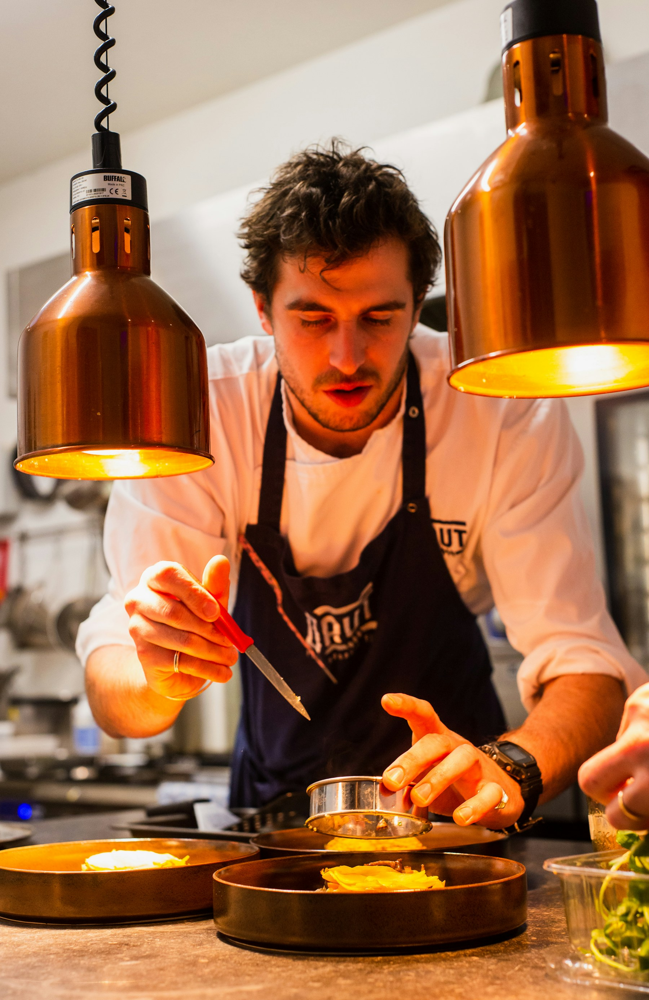
Real Food. Real Hospitality. Real Partnerships.
Scratch Cooking. Culinary Creativity. Local Leadership.
Your Cuisine Chef (YCC) delivers exceptional dining experiences for independent schools, corporate workplaces, and organizations.
Customized Dining. Exceptional Experiences.
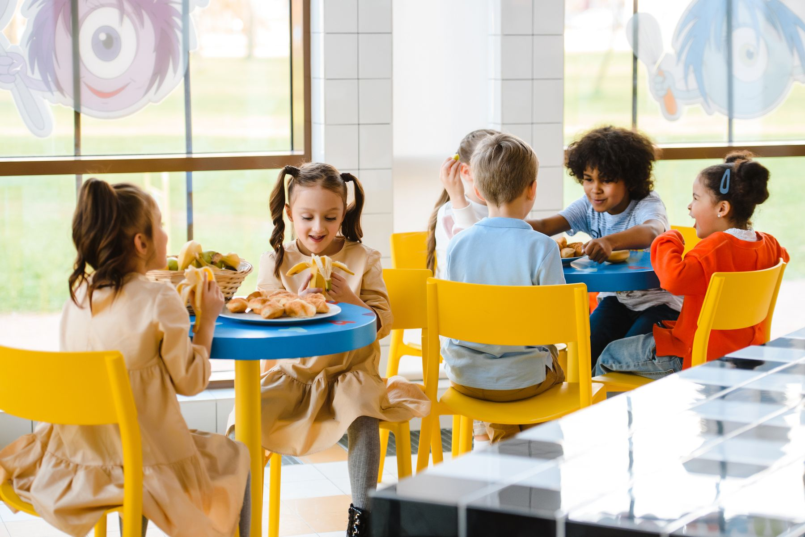
Independent School Dining
Chef-prepared meals, flexible programs, and personalized service.
Learn More →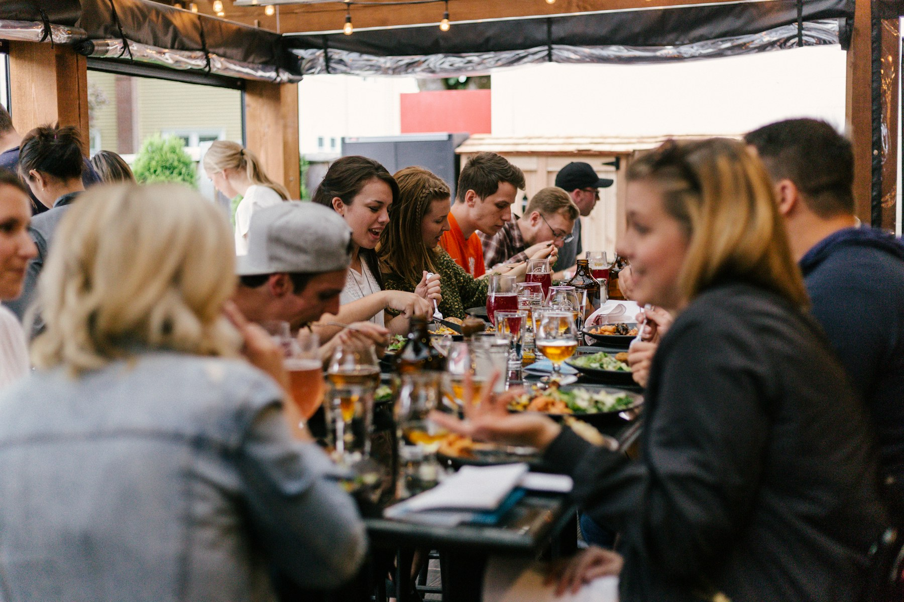
Corporate & Workplace Dining
Fresh, convenient dining programs that bring people together.
Learn More →Coffee Shops & Cafés
Customized café concepts with specialty beverages and grab-and-go options.
Learn More →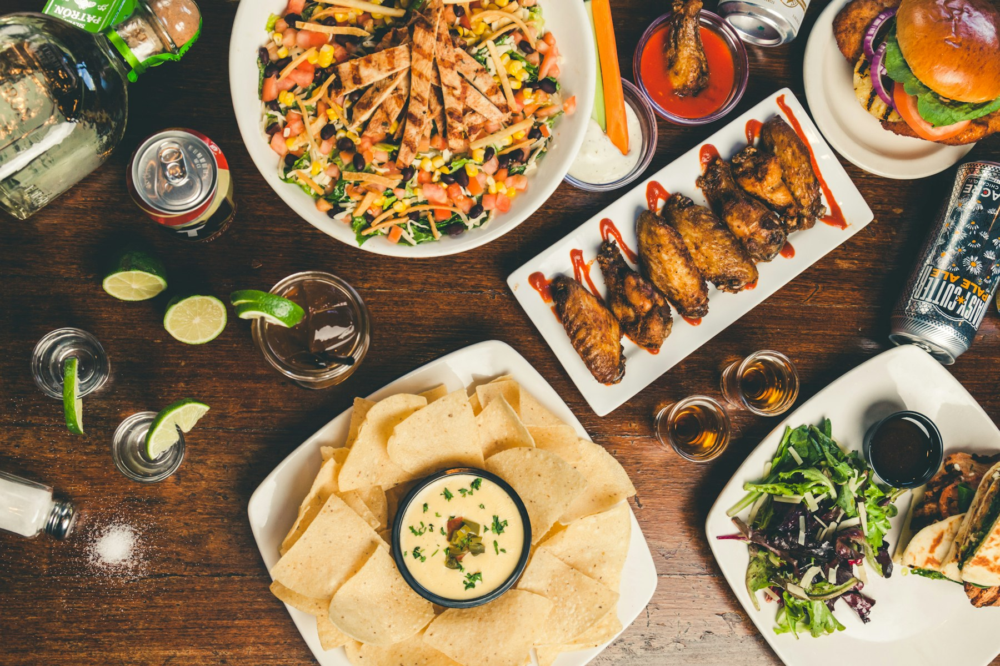
Catering & Special Events
Chef-crafted catering for school events, corporate functions and more.
Learn More →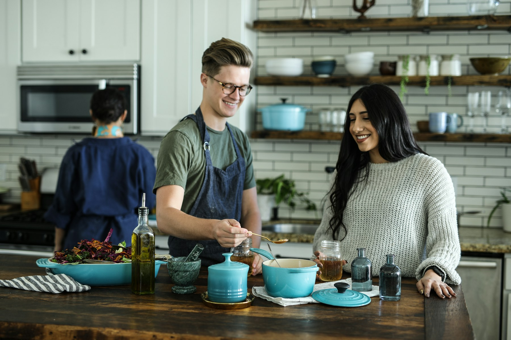
Foodservice Management
Culinary and operational leadership to strengthen your dining program.
Learn More →Hear From a School Partner
Dr. Dallas Lusk, Executive Director at St. Mark Lutheran School, shares his experience partnering with Your Cuisine Chef.
What Our Community Is Saying
Kids in the Kitchen
Students learn where food comes from, cook alongside our chefs and build healthy habits that last.
Student Engagement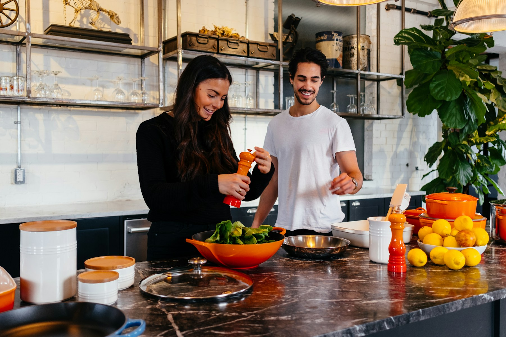
Our Story Is About People
Your Cuisine Chef was built on a belief that great food brings people together. Founder Chef Gabriel McKnight leads a locally owned team with a passion for exceptional food and strong relationships.
Meet Our Team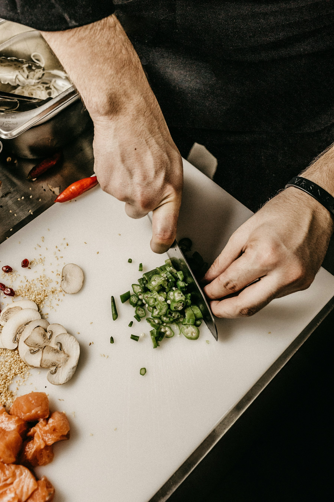
Let's Create Something Exceptional Together.
A Better School Day Starts with Better Food.
Chef-prepared meals, flexible programs, and meaningful partnerships that make dining an important part of your school community.
Chef-Inspired Dining Stations
Main Entrée Station
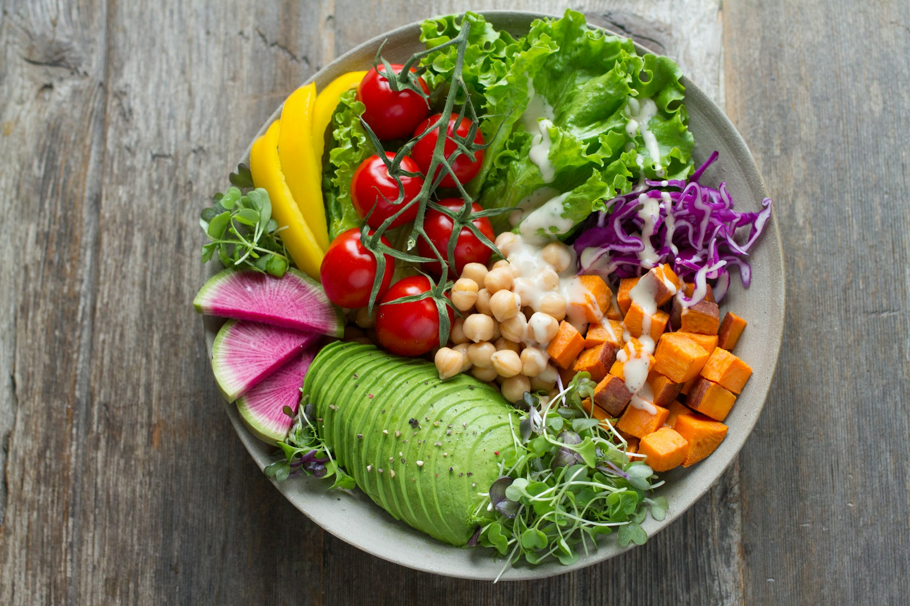
À La Carte Station
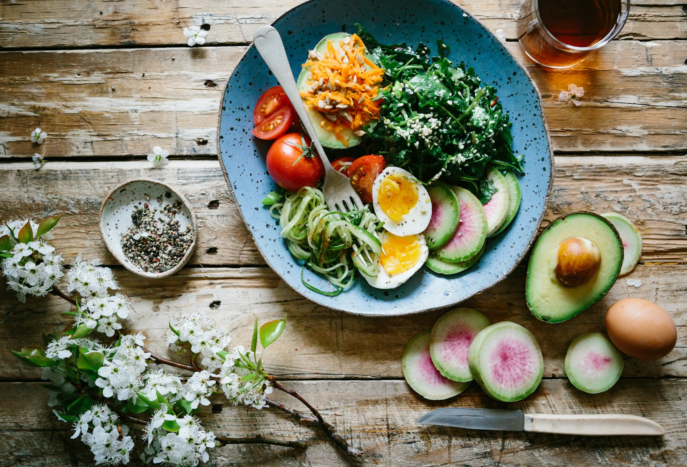
Grab-and-Go Station
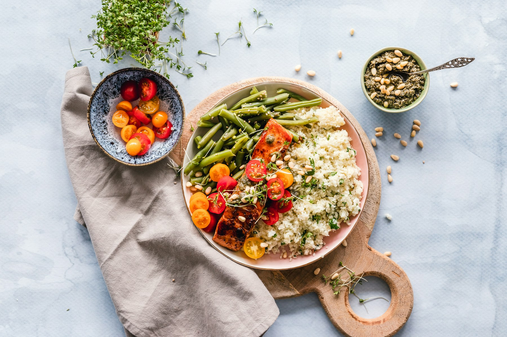
Salad & Baked Potato Bar
Wellness & Allergen Procedures
Nutrition & Wellness
Balanced, chef-prepared meals designed to support student wellness.
Allergen Procedures
Documented food safety and allergen procedures, reviewed with your school.
Food Safety
Safe handling standards across every kitchen we operate.
Student Engagement
Kids in the Kitchen
Hands-on cooking experiences for students.
Chef on Display
Students see their food prepared fresh.
Eat & Learn
Food education woven into the school day.
Feedback & Gardens
Student feedback shapes menus; garden integration where possible.
Financial Arrangements
Tuition-Inclusive
Dining included in tuition.
Retail / Pay-as-You-Go
Families and students pay per meal.
Hybrid / Subsidy
A blend of tuition support and retail.
Revenue Share
Shared results between school and YCC.
Financial models are options, subject to agreement.
Hear From a School Partner
Dr. Dallas Lusk, Executive Director at St. Mark Lutheran School, shares his experience partnering with Your Cuisine Chef.
 Dr. Dallas Lusk, St. Mark Lutheran School
Dr. Dallas Lusk, St. Mark Lutheran SchoolLet's Create Something Exceptional Together.
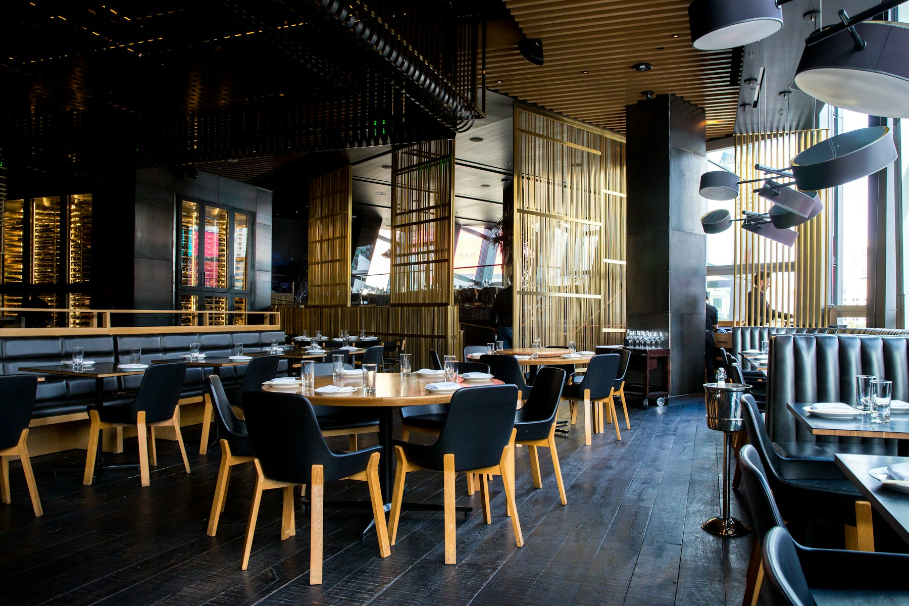
Bring People Together Through Great Food.
Thoughtfully designed dining programs that create inviting workplaces and stronger company cultures.
Dining Built Around Your Workplace
How We Work With You
Customization
Menus and service styles shaped around your people and space.
On-Site Service
A YCC team serving on your premises.
Operating Oversight
Hands-on management of daily operations.
Menu Planning
Chef-led menus planned around your preferences.
Employee Experience
Dining that improves the workday and builds culture.
Service Flexibility
Programs that adjust as your needs change.
Elevate Your Workplace Experience
Customized menus, on-site service, operating oversight and thoughtful menu planning shape an employee experience that fits your team and adapts as your needs change.
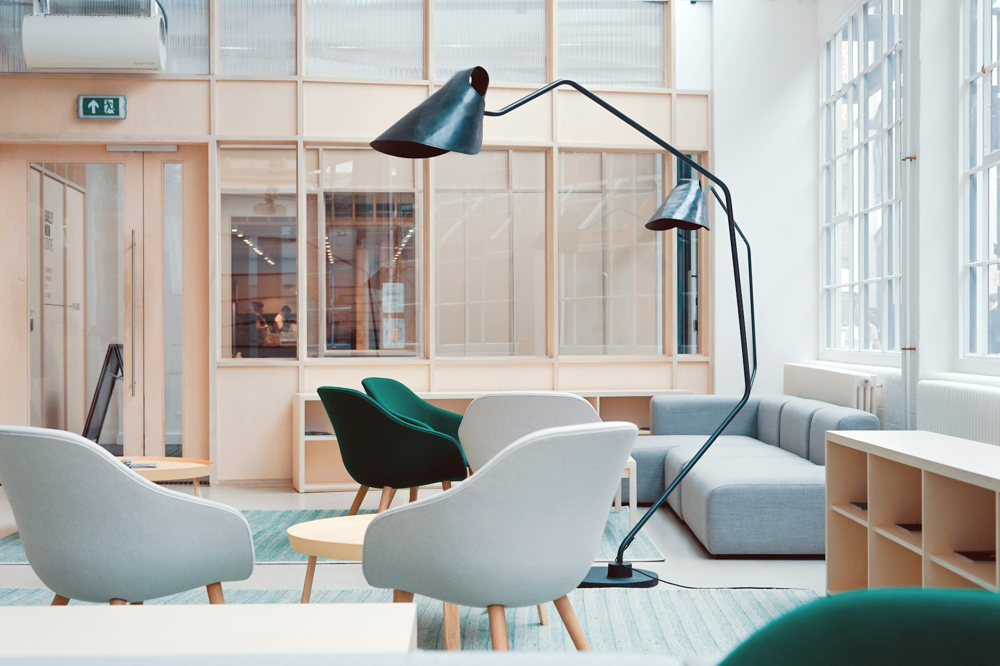
Let's Create Something Exceptional Together.
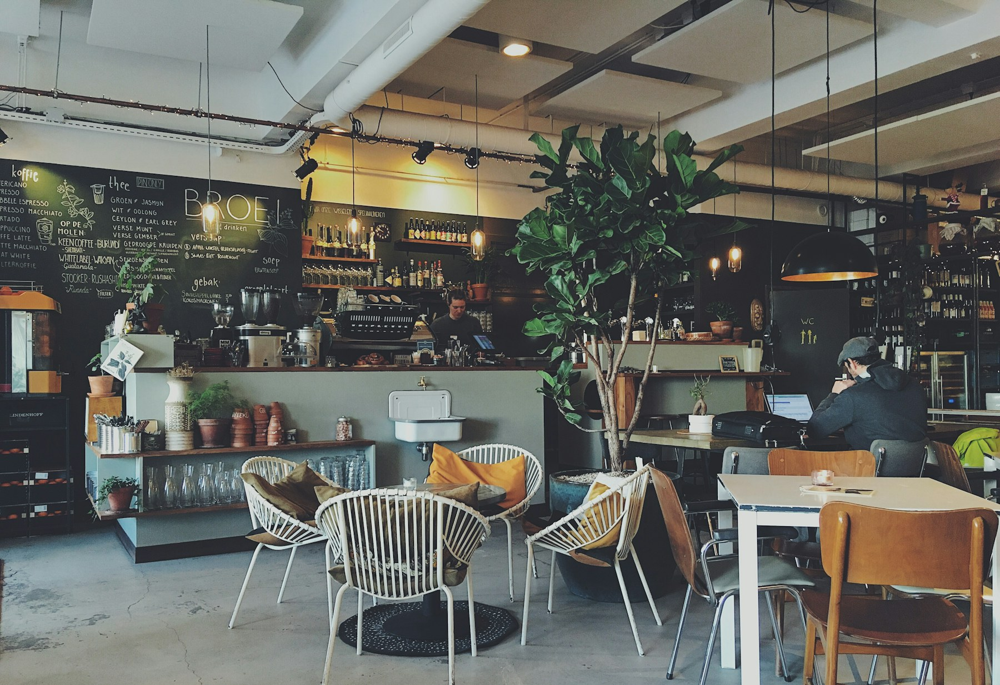
Your Space. Your Brand. Our Expertise.
Specialty beverages, coffee bar operations, breakfast items, pastries and grab-and-go, tailored to your café.
Café Concepts
Specialty Beverages
Coffee Bar
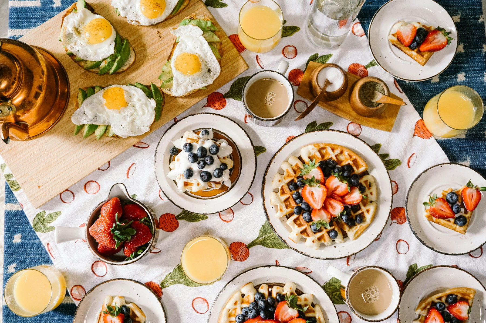
Fresh Breakfast
Café Interiors
Our Approach
Coffee Bar Operations
Coffee bar service and beverage programs tailored to your space.
Breakfast & Pastries
Fresh breakfast items and pastries.
Grab-and-Go
Convenient ready-to-go selections.
Tailored Café Concepts
A concept built around your space and your brand.
Management
Day-to-day café management handled by YCC.
Service Approach
Friendly, hospitality-first service.
Let's Create Something Exceptional Together.
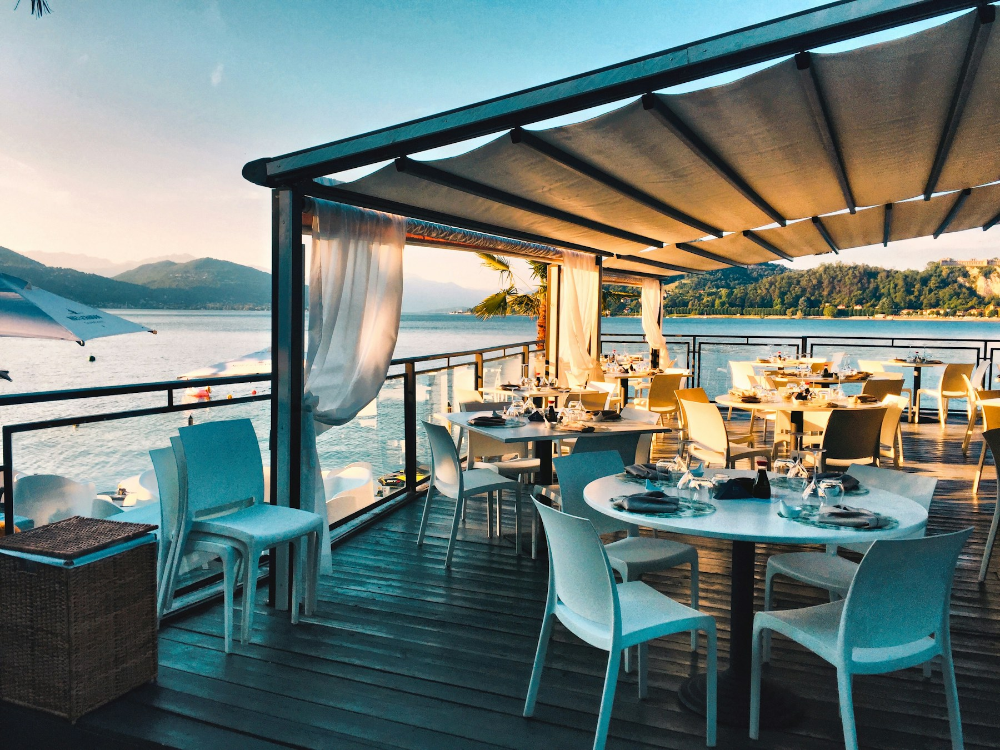
Thoughtfully Prepared. Professionally Served.
Chef-crafted catering for corporate meetings, school functions, executive breakfasts, receptions and celebrations.
Every Occasion
Chef-crafted menus
Hot serving trays
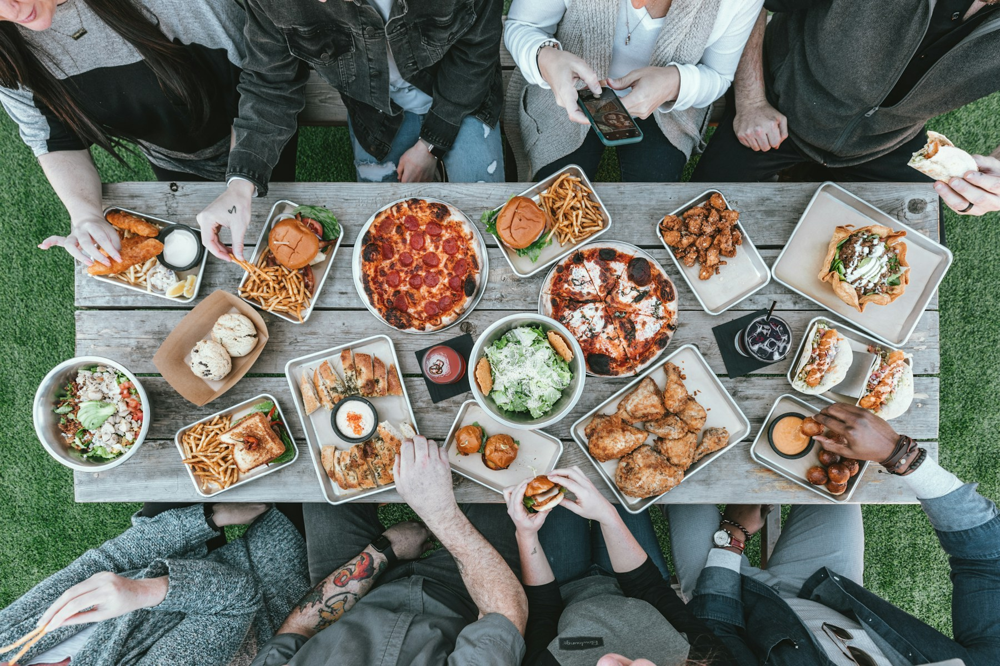
Platter presentation
Buffet presentation
From Planning to Service
Planning
We work with you on menus and timing for your event.
Presentation
Chef-crafted food, attractively presented.
Delivery & Set-up
Delivery and set-up arranged to suit your event.
Staffing
Event staffing available where needed.
Let's Create Something Exceptional Together.
Big-Company Capabilities. Local-Company Attention.
We combine culinary expertise, operational excellence and personal leadership to create dining programs that are truly different.
Our Story
YCC was founded by Chef Gabriel McKnight on a simple belief: great food brings people together. Scratch cooking, chef-led menus and direct local accountability guide every program.
Scratch Cooking & Chef-Led Menus
Real ingredients and chef-crafted recipes shape every menu.
Local Leadership & Direct Accountability
A locally led team that answers directly to you.
Operational Support
Hands-on support for your kitchen and team.
Financial Transparency
Clear, flexible financial models.
Customizable Partnerships
Programs built around your community.
Community Engagement
More than a meal, a lasting impact.
School Success Stories & Recommendations
Explore: School Dining · Corporate Dining · Cafés · Catering
Join a Team That Makes a Difference
Be part of a company that values great food and meaningful work. Send your resume to team@yccfoodservice.com.
Let's Create Something Exceptional Together.
Let's Create Something Exceptional Together.
We'd love to learn about your organization and discuss how we can create a dining program for your community.
Contact Us
📞 832-257-6694
✉ team@yccfoodservice.com
🌐 yccfoodservice.com
📍 Houston, TX
Thank you!
Your inquiry has been received. The YCC team will be in touch shortly.